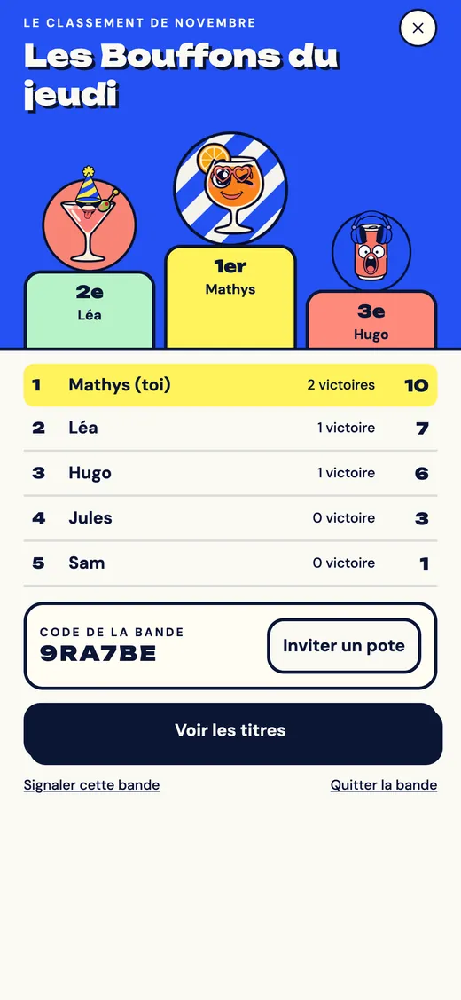

Classement du mois
Les bandes de potes : le classement du mois entre amis
Qui est le patron ce mois-ci ?
Jouer sur iPhone
En deux mots : Les bandes de potes sont des groupes permanents dans l'app iPhone PAFOU. Tu crées ta bande, tu invites tes amis avec un lien, et chaque partie jouée ensemble compte pour le classement du mois : 3 points par victoire, 1 point par partie. Le classement repart de zéro chaque mois, avec des titres et des statistiques à partager.
- Pour qui
- un groupe d'amis qui joue régulièrement
- Invitation
- par lien ou par code
- Classement
- remis à zéro chaque mois
- Compte
- Se connecter avec Apple
En bref
- Un classement du mois entre amis, remis à zéro le 1er.
- 3 points par victoire, 1 point par partie jouée.
- Invitation par lien ou par code.
- Des titres à partager en image dans le groupe.
Comment créer une bande ?
Depuis ton profil dans PAFOU, tu crées une bande et tu lui donnes un nom. L'app te donne un code et un lien d'invitation à envoyer dans ton groupe de discussion. Tes amis touchent le lien et rejoignent la bande.
Les bandes demandent un compte, créé avec « Se connecter avec Apple ». C'est le seul endroit de l'app où le compte est nécessaire : pour jouer, il reste facultatif.
Comment marche le classement ?
Une partie compte pour la bande dès que deux membres connectés y jouent ensemble. Chaque partie jouée rapporte 1 point, chaque victoire 3 points. Le classement affiche le podium du mois et le détail de chacun.
Le premier jour du mois, tout le monde repart de zéro. Celui qui a raté trois soirées en novembre a donc toutes ses chances en décembre.
À quoi servent les titres ?
À chambrer. Au fil des parties, PAFOU attribue des titres selon ce qui s'est passé à table : le meilleur bluffeur, celui qui se fait le plus souvent piéger. Tu peux partager les titres du mois en image dans ta conversation de groupe.
Et la modération ?
Les noms de bandes sont écrits par les joueurs et passent par un filtre de mots. Chaque membre peut signaler une bande ou un membre, le masquer ou quitter la bande. Le créateur peut exclure un membre. Les signalements sont lus par l'équipe.
Par quel jeu commencer avec sa bande ?
La Pyramide est le meilleur point de départ : elle est gratuite, se joue de 2 à 8 et désigne un vrai vainqueur. Pour organiser un rendez-vous régulier, lis nos conseils pour organiser une soirée jeux.
Questions fréquentes
Faut-il un compte pour jouer à PAFOU ?
Non. Le compte est facultatif pour jouer. Il devient nécessaire seulement pour les bandes de potes, parce qu'il faut savoir qui a gagné quoi.
Combien de bandes peut-on rejoindre ?
Tu peux faire partie de plusieurs bandes : une par groupe d'amis, par exemple.
Que deviennent les points à la fin du mois ?
Le classement repart de zéro le premier jour de chaque mois. Les titres gagnés restent visibles dans la bande.